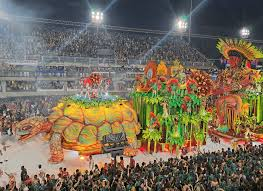

Brasil es el país más grande de América del Sur y uno de los destinos turísticos más vibrantes del mundo. Es famoso por su impresionante naturaleza, que incluye la enorme Amazonas, hermosas playas y una gran diversidad cultural. Además, ciudades como Río de Janeiro atraen a millones de visitantes por lugares icónicos como el Cristo Redentor y por celebraciones mundialmente conocidas como el Carnaval de Río de Janeiro. Brasil es un país lleno de música, alegría, paisajes increíbles y tradiciones que lo convierten en un destino fascinante para los viajeros
La cultura de Brasil es muy diversa y colorida, resultado de la mezcla de influencias indígenas, africanas y europeas. Esta combinación se refleja en su música, su gastronomía, sus tradiciones y sus festividades. Uno de los eventos culturales más famosos es el Carnaval de Río de Janeiro, conocido por sus desfiles, bailes y trajes llenos de color. Además, ritmos como la Samba forman una parte muy importante de la identidad cultural del país. Gracias a esta riqueza cultural, Brasil es considerado uno de los lugares más alegres y llenos de vida del mundo

Entre los platos más conocidos está la Feijoada, un guiso preparado con frijoles negros y carne que es considerado uno de los platos nacionales. También son populares el Pão de queijo, un pan pequeño hecho con queso, y la Moqueca, un delicioso guiso de pescado o mariscos preparado con leche de coco y especias. La gastronomía brasileña se caracteriza por sus sabores intensos, ingredientes tropicales y una gran variedad de platos